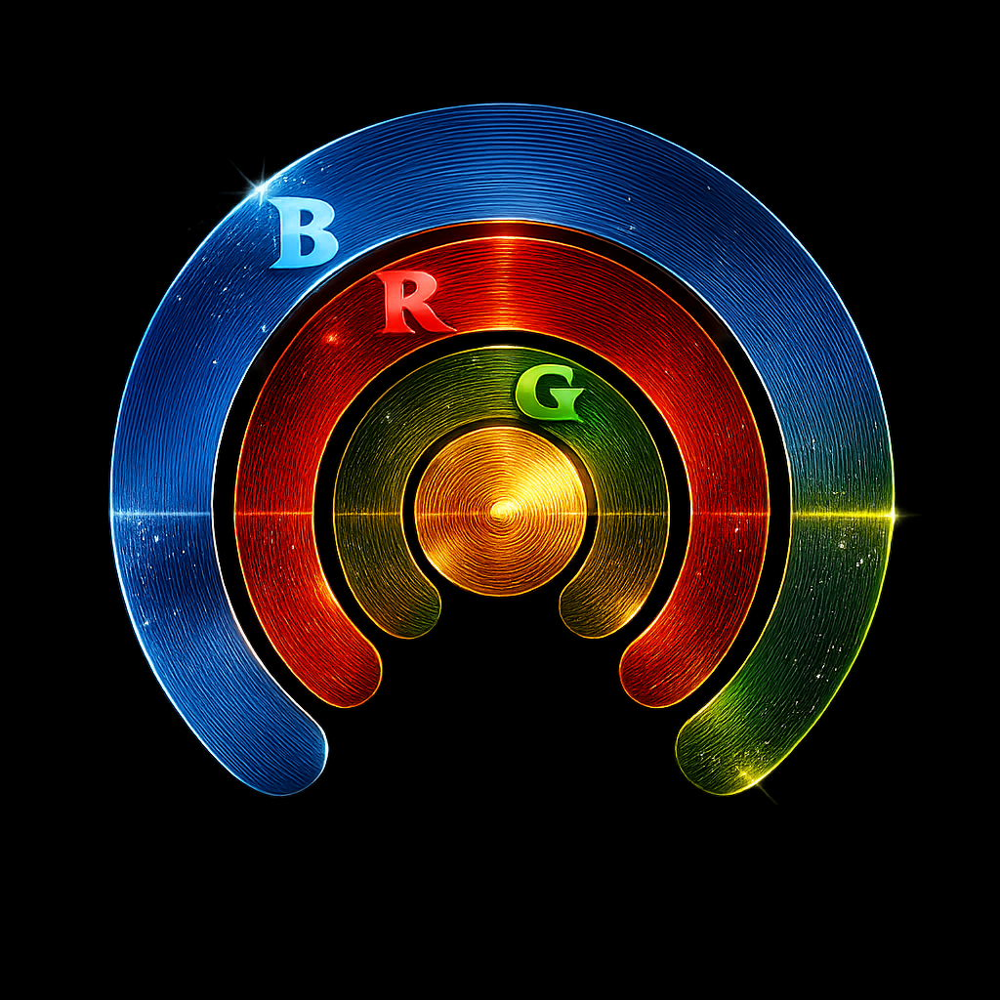
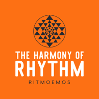

Download links
BRG Page Sections
Description
BRG turns the metronome into a rhythm laboratory for exploration, practice and musical discovery.
A normal metronome marks time. BRG goes further: it lets you hear several rhythmic layers interacting inside a shared cycle.
The app is built around three main musical surfaces:
-
B — Beats
The basic pulse structure. On its own, B behaves like a metronome: for example, B = 4 creates a four-beat cycle with an accent on the first beat. -
R — Rate
The subdivision layer. R multiplies the pulse into smaller rhythmic values, creating a second layer of motion inside the B cycle. -
G — Grouping
The grouping layer. G divides or organizes the rate events into larger rhythmic shapes, creating another sound layer and a deeper polyrhythmic relationship.
Each of these layers can have its own sound. They can also share the same sound, creating a more monophonic rhythmic pattern. By changing B, R and G, the user can move from simple metronome-like practice to complex rhythmic relationships involving subdivisions, groupings, accents, cycles and polymetric forms.
BRG also includes a Form layer, marked by a distinct sound on the beginning of the form. In Simple Mode, this follows the B cycle. In Expert Mode, the form can have its own independent length, allowing the user to hear several repetitions of a BRG pattern before the form marker returns.
Expert Mode expands the concept further. It adds larger ranges, independent form length, rate spreading through Rdiv, grouping displacement and subgrouping. Rdiv makes it possible for rates to spread over more than one beat, creating an additional layer of rhythmic grouping. Displacement shifts the grouping layer, changing the rhythmic feel without changing the underlying values. Subgrouping allows G to sound as a composite pattern built from fundamental groupings of 2 and 3.
The concept of BRG originates from Kostas Anastasiadis. A book of the same name is also in preparation, expanding the musical and theoretical background behind the system.
The app was developed by Thanos Karakantas / Theta Kappa Music as an interactive audio-visual tool for bringing this concept into practice.
How to use
BRG can be approached very simply at first: choose a beat cycle, add a rate, then add grouping.
Start with B. This defines the basic pulse cycle. If B is set to 4, you can think of it as a four-beat metronome cycle, with a clear marker on the first beat.
Next, adjust R. This introduces the rate layer: the rhythmic events that subdivide or multiply the beat cycle. With B and R together, you are no longer hearing only a pulse — you are hearing a relationship between the pulse and a second rhythmic layer.
Then adjust G. This adds a grouping sound to selected rate events. The grouping layer gives the pattern another rhythmic shape and makes the relationship more musical and more physical to practice.
A simple way to practice is:
- Set B to a familiar pulse cycle, such as 4.
- Set R to a simple rate and G to the same value.
- Listen until the relationship between the beat and the rate feels stable.
- Change G and listen to how the grouping changes the pattern.
- Clap, sing, play or improvise along with one layer while listening to the others.
- Change one value at a time and notice how the feel changes.
The goal is not only to count the rhythm, but to internalize it. BRG is useful because it makes rhythmic structures audible, visual and repeatable. You can practice against the beat layer, the rate layer, the grouping layer, or the form marker.
In Simple Mode, the main controls are focused on the core relationship between B, R and G. This is the best starting point for practice and exploration.
In Expert Mode, additional parameters become available:
-
F — Form
Defines a larger form cycle. This can be different from B, allowing the form marker to return after a chosen number of beats or BRG repetitions. -
Rdiv — Rate division / spread
Allows the rate to be spread over more than one beat, creating another layer of polyrhythmic relationship. -
G displacement
Shifts the grouping layer forward or backward, changing the feel of the rhythm while preserving the underlying structure. -
Subgrouping
Lets the grouping layer be heard as a composite pattern based on combinations of 2 and 3.
BRG can be used slowly for focused practice, at higher tempos for performance preparation or experimentally as a compositional tool. The same values can be heard as a metronome exercise, a polyrhythmic study, a form generator, or a source of musical ideas.